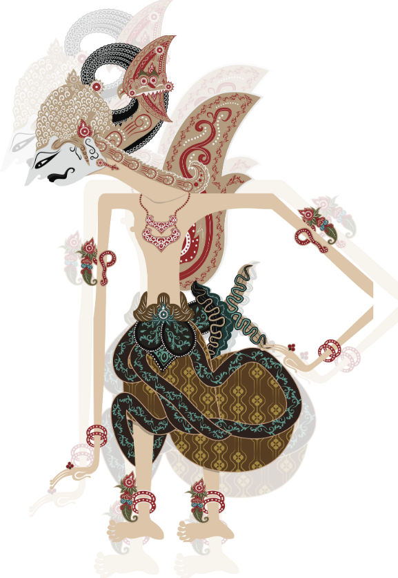

This Is Arjuna

Profile
Arjuna itu salah satu Pandawa, ksatria yang ganteng, pintar, dan jago banget dalam memanah. Dia sering dianggap sebagai pahlawan utama di cerita pewayangan, terutama di epik Mahabharata.
Karakter
Arjuna itu sosok yang kalem tapi fokus. Meskipun dia terkenal sebagai petarung yang kuat, dia selalu berpikir panjang sebelum bertindak.
Sifat
1. Berani: Nggak pernah takut menghadapi lawan, bahkan yang jauh lebih kuat dari dia.
2. Bijaksana: Meskipun jago, dia nggak pernah gegabah dalam bertindak. Arjuna selalu dengar nasihat dan belajar dari pengalaman.
3. Romantis: Yep, Arjuna ini juga terkenal playboy, sering disanjung karena pesonanya yang memikat hati para wanita